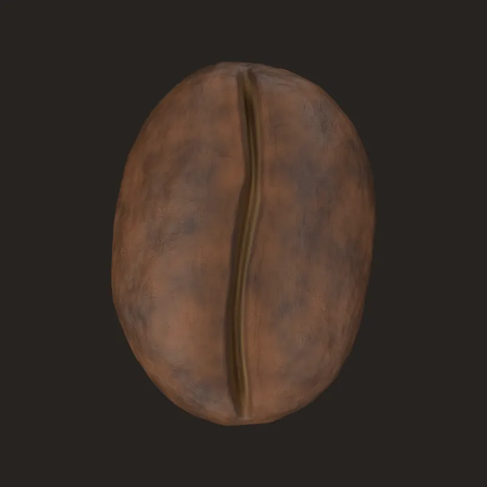

Café recién tostado, grano a grano
Tostamos en el local dos veces por semana y lo servimos en la barra, en filtrado o para llevar a casa.
Ver la cartaCafé recién tostado, grano a grano
Tostamos en el local dos veces por semana y lo servimos en la barra, en filtrado o para llevar a casa.
Ver la cartaAlba nació como una tostaduría de barrio con una sola máquina y una barra de seis banquetas. Hoy compramos directo a productores, tostamos lotes chicos y te contamos de dónde viene cada taza.
Lo que pasa en la barra
-
Café de especialidad
01Cuatro orígenes rotativos y un blend de la casa. En la pizarra está la finca, la altura y el proceso de cada uno.
Ver la carta -
Tueste propio
02Lotes de 5 kg a la vista de todos. Tueste claro para filtrados, medio y oscuro para espresso.
Cómo tostamos -
Desayunos y meriendas
03Medialunas de manteca, tostados en pan de masa madre y pastelería que horneamos cada mañana.
Ver la cocina -
Talleres de barismo
04Los sábados a la tarde: espresso, latte art y métodos filtrados. Grupos de seis personas.
Reservar lugar -
Café para llevar
05Bolsas de 250 g y 1 kg, en grano o molido para tu método. Te lo molemos en el momento.
Ver los granos


Los granos de esta semana

Etiopía Yirgacheffe
Floral y cítrico, con final a té negro. Ideal en V60.
$ 9.800 · 250 g
Colombia Huila
Panela, durazno y una acidez amable. Funciona en todo.
$ 8.900 · 250 g
Brasil Cerrado
Chocolate amargo y nuez. Cuerpo para el cortado de todos los días.
$ 7.600 · 250 gBlend Alba
El de la barra: dulce, redondo y con crema persistente.
$ 8.200 · 250 gTe esperamos con la cafetera encendida
Calle del Tueste 1234 · Lunes a sábado de 8 a 20 h
Cómo llegar